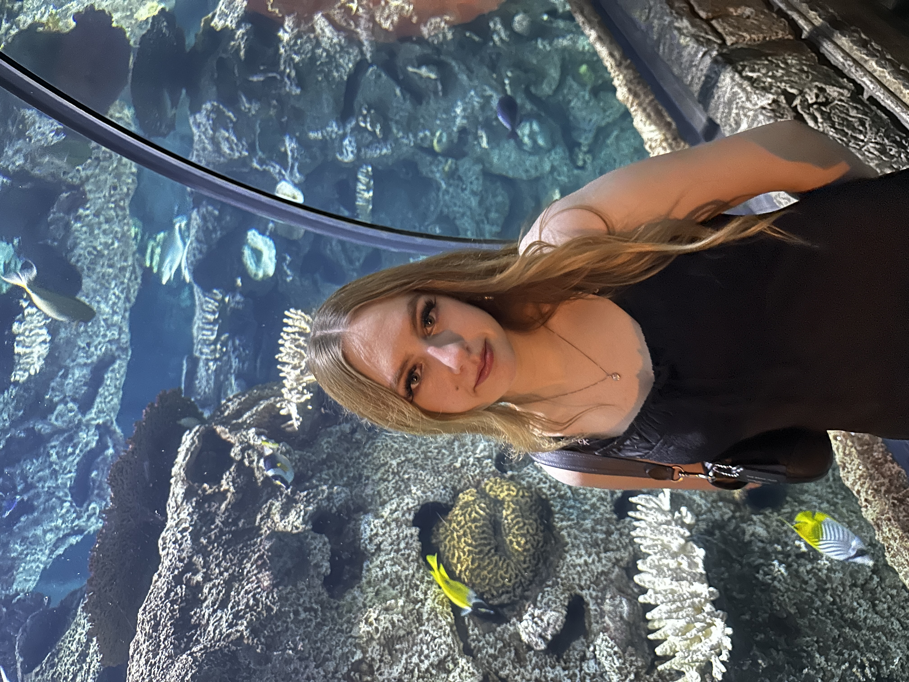

Hi, I’m Emma Darnell, a graphic designer focused on branding, packaging, and editorial design. I enjoy creating work that blends clean structure with playful visual storytelling.
My design approach is rooted in thoughtful typography, soft color palettes, and conceptual ideas that connect emotionally with audiences. I’m especially interested in creating brand identities and physical design experiences that feel cohesive and memorable.
Right now, I’m studying and building my portfolio while working on projects like Elysian, BunBun, and editorial spreads. I’m also exploring ways design can be used to tell more personal and narrative-driven stories.
Outside of design, I enjoy collecting inspiration from packaging, fashion branding, and everyday visual systems. I’m always experimenting and refining my style as I grow as a designer.